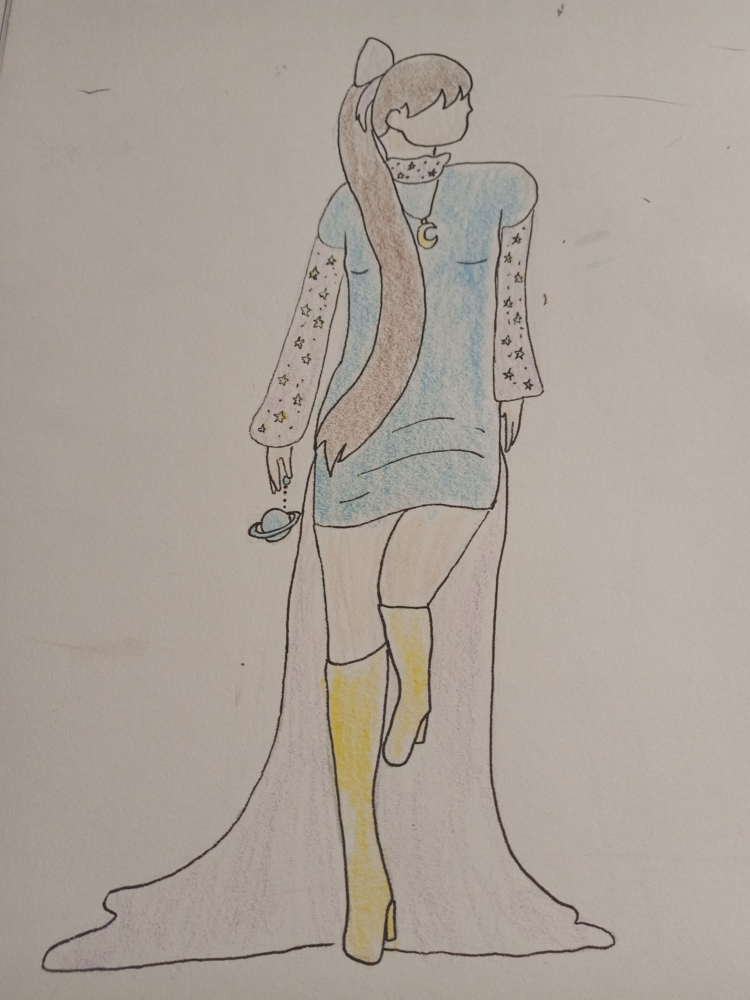
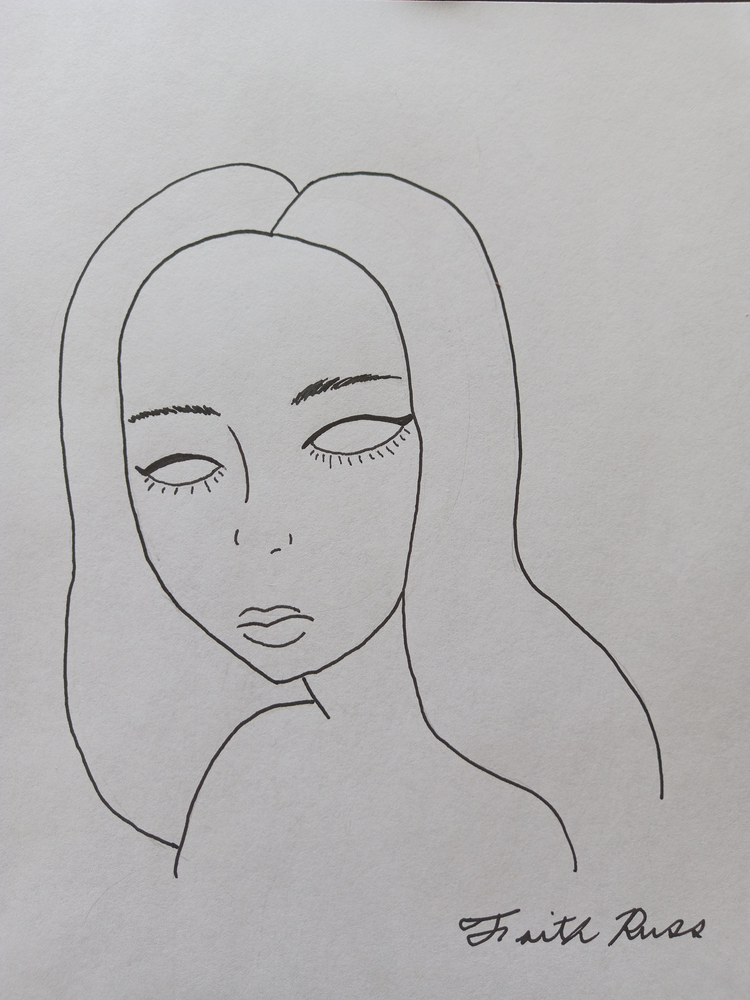
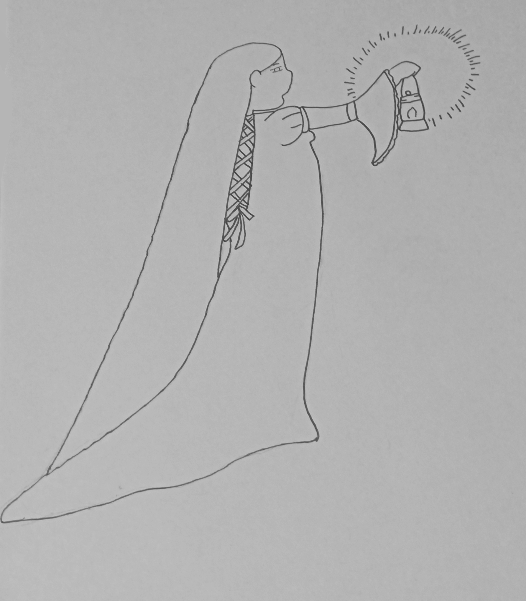

This drawing was created by recreating a pose I saw online. Somewhere in the process, I decided to make her a sister to a previous drawing where the character held a planet as a purse. Only then did I add space elements, finally inking and coloring her in to complete one of my favorite drawings.

This portrait is from a series of drawings I did as custom album covers for my personal playlist. At one time, I was in a K-pop band called Red Velvet. I decided to create this portrait to be the cover for my playlist containing some of the band's songs. Even as I do not listen to the band anymore, I still value this portrait of one of the members.

This drawing is part of a series in which I explored the use of helos as an indication of light. In this one, I want my character to be leading the way with a lantern. As always, I start with sketching out a pose before moving on to the details. I was following a trend of drawing flowing hair and clothes, helping to create this elegant maid.